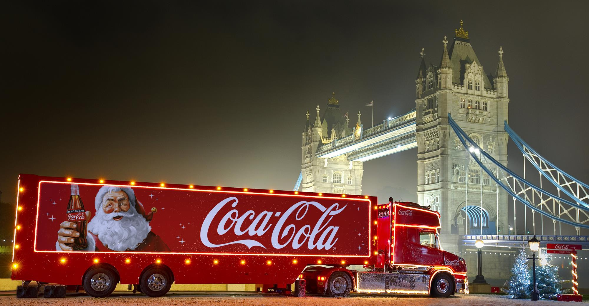
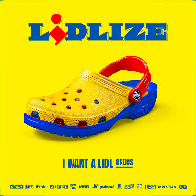
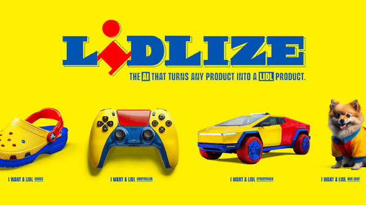
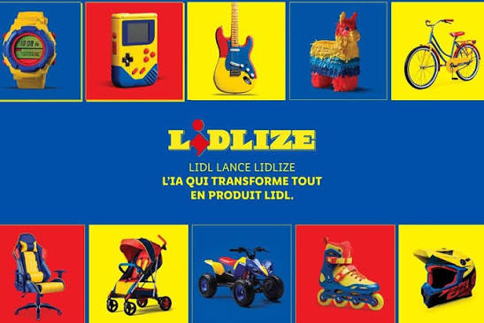

ComfyUI · Dynamic Creative Optimization · Go-to-Market · MARKET
DCO and the Agency Market
Dynamic Creative Optimization (DCO) is a mature, template-built technology — an assembly built on rules for pre-defined assets. Here's the key point: with the arrival first of ML and then of AI, these environments and tools are becoming more flexible, albeit with a certain inertia. AI-generated creative (no longer assembled, but generated and/or adapted) is therefore entering the content work-flow (images, video, etc.) and running up against the traditional tools of the template era, built to control output quality on predefined slots. The evolution under way, meanwhile, is automatic quality control based on generative adaptation and orchestration. And the automatic generation of story variants, aimed at high impact with audiences — or at least estimated impact. In short, what we traced in Automated Creative for ADV Campaigns. The international look we want to take now is at those already using AI-based quality control, set against traditional DCO — to understand where the big platforms, despite already having their own generative capabilities, might leave an opening for smaller content producers. After this global overview, in the next post we will try to look at the Italian market: The Agency Channel in Italy.
The market at a glance
-
1
Dynamic Creative Optimization shops
Performance-marketing agencies running DCO already generate large batches of ad variants per campaign for testing, and are convinced the volume pays off. What they lack is a way to check whether a variant drifts from character identity or brand — a question whose solution is typically AI-driven. The automatic correction loop we've built answers part of that problem. If you can't raise the level of creativity (through new, varied and engaging variants), you can at least guarantee greater brand consistency, without paying a reviewer for every variant.
-
2
Global CPG multi-market campaigns
Large consumer-packaged-goods (CPG) companies1 recycle the same campaign across dozens of markets, each with its own local team and local adaptations. At that scale, checking every variant by hand becomes too costly. For example, Coca-Cola's 2024 AI-generated "Holidays Are Coming" Christmas ad is one of the most-cited cases: within days of launch it drew criticism for truck wheels that seemed to slide instead of roll, and figures out of scale with their surroundings — two defects that the judge step in our pipeline should be able to flag, before human review of the cut.

Coca-Cola, “Holidays Are Coming” (2024)Three stills from the AI-generated Christmas campaign referenced above — the widely reported example of the kind of error (sliding wheels, off-scale figures) a closed-loop judge step is meant to catch before a human reviewer does. In some cases, manual review isn't just expensive, it's impossible. Lidl France's "Lidlize" (agency Marcel, technology partner Bria, June 2024) let the public turn any object into a Lidl-branded product; Bria reported over 1.7 million images generated in three weeks2. The system worked well: the brand-consistency layer, a purpose-trained model with human oversight, was built by the generation vendor itself. A specialist's role there was to verify and calibrate that consistency. One could point out that these campaigns were certainly expensive, and so the libraries and AI tools used weren't constrained by a low budget. But it should also be noted that these campaigns are two years old now, and were made by large agencies (so less quick to adopt updates and market shifts in AI tools). What's more, two years have passed — which is eons on AI's own timescale, especially for image- and video-generation models. It's no coincidence that APIs such as Google Gemini 4 Argon can today achieve far more refined and complex results, at much lower unit costs (see dco-costs-tech.html).



Lidl France, “Lidlize” (2024)An online tool let anyone pick any product and get back an AI-generated version of it redrawn in Lidl's own colours and lettering — as if it were a Lidl-branded product — to share under the claim “I want a Lidl ___”. Shown here: a pair of Crocs, a game controller, a Cybertruck-style car, a dog coat.
Traditional DCO, and where a market gap opens
-
01
What traditional DCO is good and bad at
Traditional DCO holds its place in the media market for historical reasons. It personalises campaigns at a scale no manual workflow could match — swapping text, price, call-to-action, product image or background colour based on geo-location, weather, past purchases or time of day — and that personalisation measurably improves click-through and conversion against static banners. It also removes a specific kind of production labour: nobody has to manually export hundreds of banner sizes and variant combinations by hand for every audience segment.
The costs are about how DCO itself works, not a comparison with AI — which we'll come to in the chapters ahead. The mechanism is modular overlay: a 2D product cutout pasted onto a static background template, with a price tag layered on top. That's where "template fatigue" comes from, the industry's own name for what happens when every variant of every campaign starts to look like the same template wearing different clothes, with no real stylistic or cinematic coherence. The system also depends entirely on a clean XML or JSON product feed: if that feed has an error, or an attribute is mismatched, the ad inherits those errors. And setting up the dynamic rules, the HTML5 templates and the tracking tags across several DSPs still takes real developer time up front. Of course, over the past year or so, all these checks can be much improved with an LLM or SLM doing syntactic/semantic validation of the formats. There's also a different kind of limit, one that matters far more when set against AI — and it's what the next chapter looks at: traditional DCO can swap what's already inside a finished scene, but it cannot generate a new, coherent, multi-shot scene or story. It's reach and speed, without narrative range.
-
02
Where the market itself has an opening
That last limit is where the market itself, not any one vendor, has an opening. The blunt way to put it: traditional DCO is effectively spreadsheet-driven layout switching — rules and templates deciding which pre-made pieces have to fit together (Flashtalking- or Celtra-style), incapable of generating anything new. That void is exactly what a generative-orchestration pipeline could fill: not one new asset per rule, but forgetting the rules altogether, and producing a coherent scene or sequence, endogenously checked for its own consistency. To be precise: these templates are hooked up to an AI-driven generative layer that produces one new background or shot at a time, inside a fixed template (the way one-shot generations could, Stable-Diffusion-style, a few years back). What's rarely achieved is a sequence/storyboard able to hold consistency across dozens of narratively distinct shots, or to generate a genuinely coherent multi-shot scene.
-
03
Where the edge actually is
That is precisely the contribution of the pipeline described elsewhere on this site — The Engine: generation, control, export and DCO: One Pipeline, Many Products — applied to this specific gap: character-consistent scenes across a cast, not one generated asset inside one template; a closed-loop QA step (the A→D→E→D loop described there) that checks every variant automatically instead of a designer eyeballing each one; and a finished variant pool delivered into the DCO an agency already runs, with no new HTML5 templating or rules-engineering required on their side. None of that displaces what agencies do today — it's additive to it, and it is the one specific thing this pipeline is built to sell into that gap rather than around it.
Related reading: The Agency Channel in Italy, DCO: One Pipeline, Many Products, The Engine: generation, control, export, DCO: cost model.
- A CPG marketing team is the in-house team at a consumer-packaged-goods company (food, drink, household, personal care) that owns brand creative for its own products — briefing agencies, approving campaigns, and keeping every market's execution on-brand. In the automation process described above, that team is the one typing the plain-text prompt the pipeline turns into a finished creative, and the one that owns the resulting configuration file: it is the body with the authority to say what "on-brand" means for its own products, which is exactly what D's identity assertions and palette rules are built to encode. ↩
- Bria, "Marcel wins Cannes Lions" (bria.ai), and the D&AD 2025 entry "Lidlize" (dandad.org). Bria reports "over 1.7 million" visuals generated "in three weeks"; the agency's D&AD entry cites over one million people and more than 2,000,000 products. The campaign ran in June 2024. Bria describes the on-brand layer as a fine-tuned model plus multi-layered moderation; no block rates are published. The figures come from the technology vendor and the agency, not from an independent audit. ↩